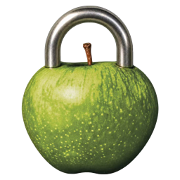

Focus MachineYour time, your rhythm · v0.6.5
READY WHEN YOU ARE
25:00
Choose focus and break minutes, then start manually.
0available rewards
This run: 0 earned
Recent activity
PREFERENCES
Your focus setup
Changes apply to the next block. Flow stays quiet at its goal.